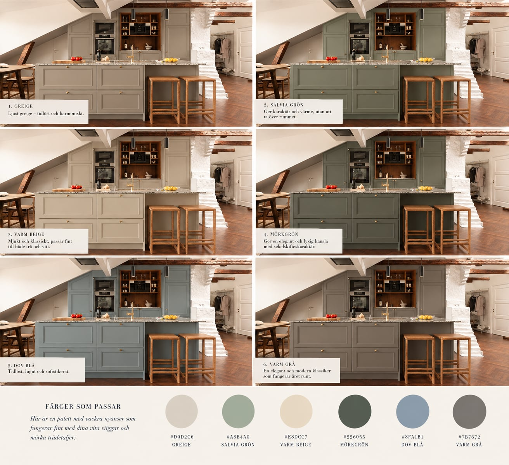
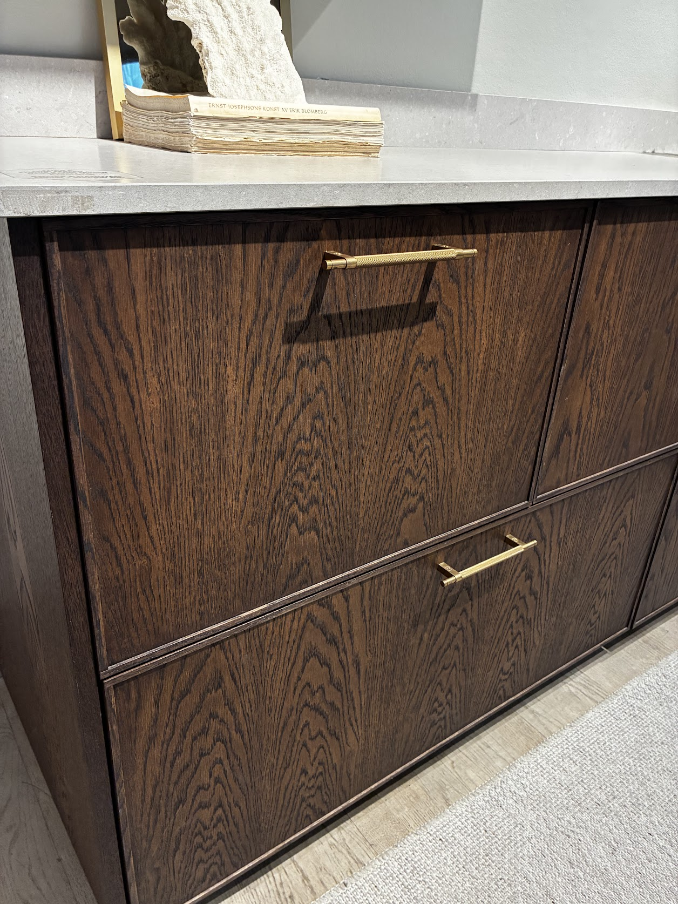
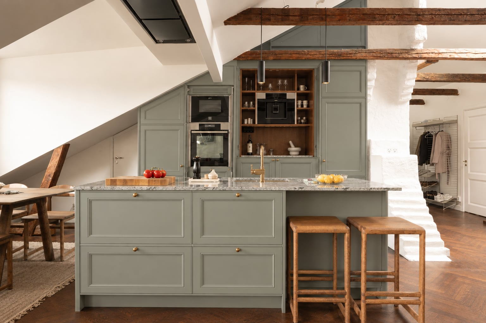
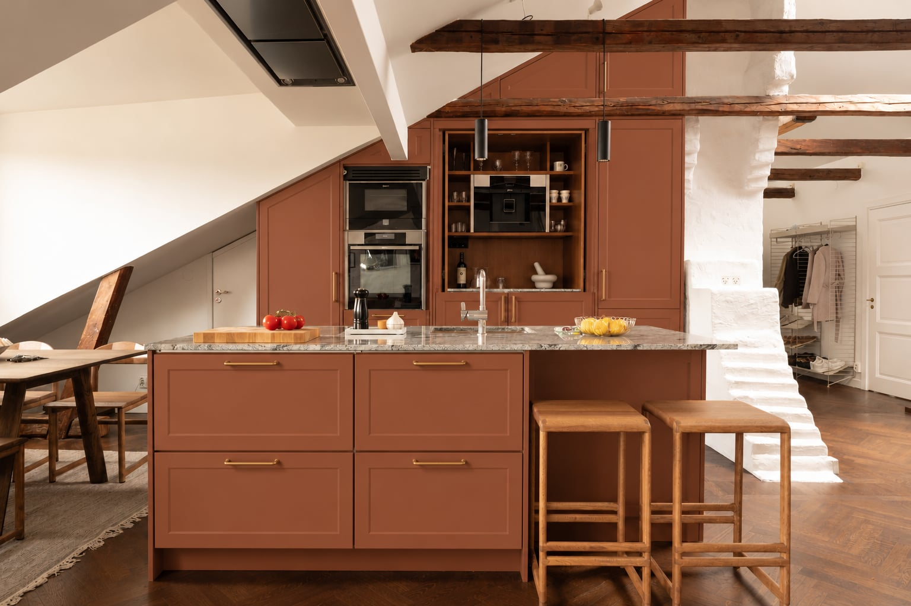

Nya Läggan
Kök
Terrass
AC
TV-möbel
Hallbänk
Hallmöbel
Kasserade projekt
Annonser
Kök
Inspiration för färg, material och känsla.
Till startsidan

Inspiration
Ljusgrön ton, varmt trä, mässing och sten.
Grön ton, varmt trä, mässing och sten.
Mörkblå ton, varmt trä, mässing och sten.

Materialdetalj: mörkt ådrat trä, räfflad mässing och ljus sten.
Jämförelse av sex möjliga kulörriktningar.

Dämpad salviagrön ton med varma trädetaljer och mässing.

Varm terrakottaton med trä, mässing och sten.
Nuvarande kök från annonsen.